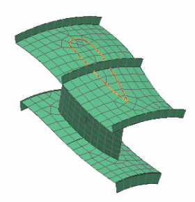
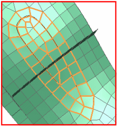
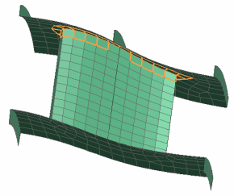
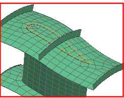
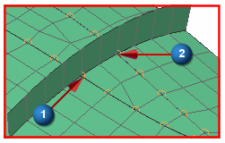
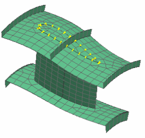

定义拐角节点的厚度
修改选定单元拐角节点的厚度。
 修改单元相关数据(单元操作工具条)
修改单元相关数据(单元操作工具条)
|
提示 |
您可能需要先打开单元操作工具条。 |
-
类型
壳

-
方法(选择条)
相关单元
-
类型过滤器(选择条)
多边形边
-
 定义螺旋桨形状的多边形边，如图所示：
定义螺旋桨形状的多边形边，如图所示：
-
大部分与多边形边相邻的单元都已被选择，但是，您仍然需要选择螺旋桨末端的单元。

-
方法(选择条)
无方法
-
类型过滤器(选择条)
单元
-
选择其它围绕机翼边和末端的单元。
提示
如果需要，使用快速拾取来选择正确的单元。

-
旋转 FEM 并选择机翼两侧任何丢失的单元。

-
拐角节点厚度
-
 无更改
无更改 -
 设置
设置 -
厚度
0.25
-
仅为选定的节点定义厚度
-
 节点
节点 -
方法(选择条)
相关节点
-
类型过滤器(选择条)
多边形边
- 选择与前面相同的多边形边(螺旋桨的边)。

注意到与肋板相邻的节点未被选中。
-
方法(选择条)
无方法
-



-
确定
